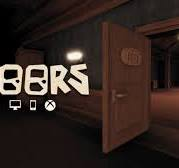

Дорс
Дорс или двери это мини хоррор игра где тебе надо прятатся или убежать от монстров
Обзор от рандомного ютубера
Офис разраба
Подробно о создании
В DOORS команда от 1 до 4 игроков (до 12 при использовании модификаторов, не рекомендовано) исследует Отель. Цель игры состоит в том, чтобы проходить через этажи и попадать на следующие (пока-что есть только первый этаж - отель).
В помещениях часто находятся комоды и столы, на/в которых могут лежать монеты или различные предметы. Игроки могут прятаться внутри шкафов и под кроватями, чтобы спастись от монстров. Отель генерируется процедурно, с набором предопределенных комнат, которые появляются в каждый раз случайном порядке. В некоторые комнатах, чтобы пройти дальше, необходимо найти ключ, который может быть где угодно.
Также, некоторые комнаты могут быть темными, и для их просмотра требуется источник света. На протяжении всей игры может появляться множество разных существ, каждое из которых имеет свою механику. В настоящее время в игре 100 комнат, а клиффхэнгер-концовка после прохождения 100-й двери намекает на следующее обновление.